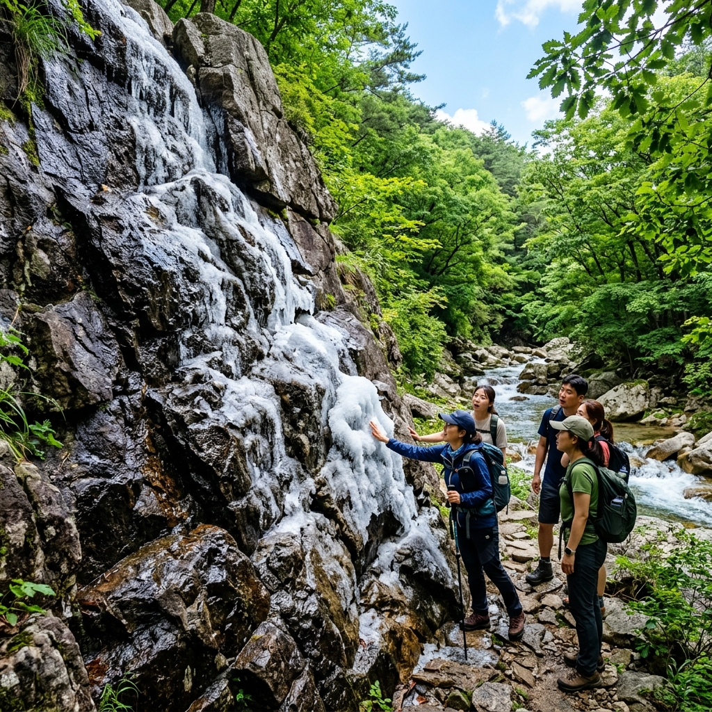
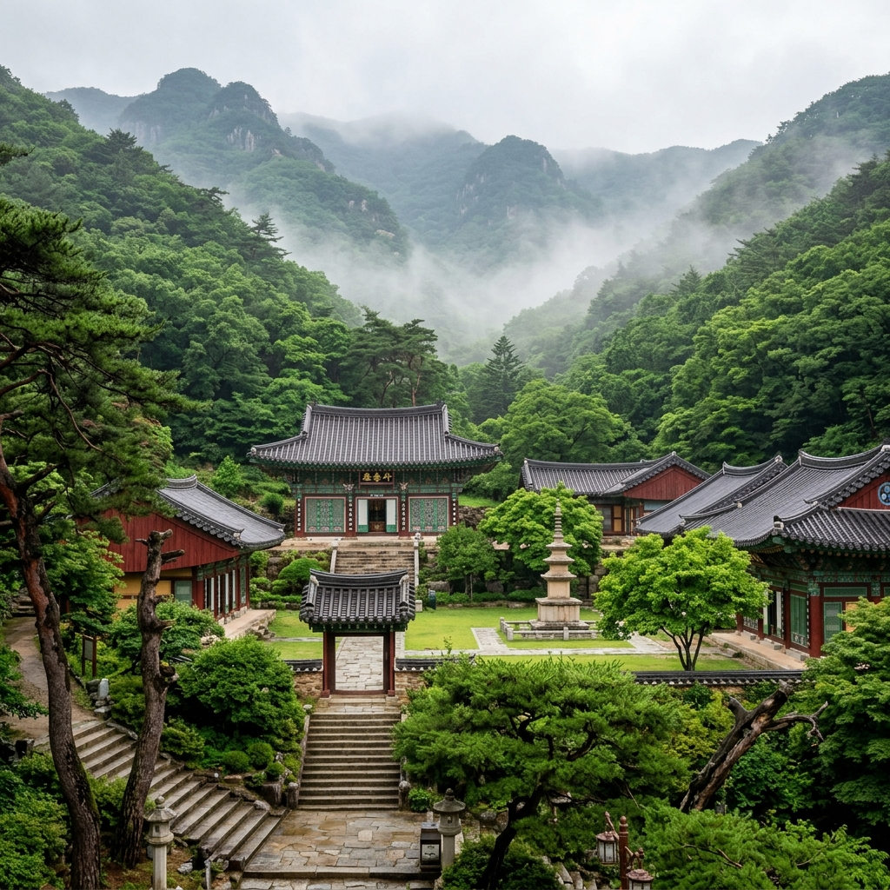

무더위가 본격적으로 시작되기 직전인 6월, 경남 밀양에는 자연이 만들어 낸 놀라운 냉방 장치가 가동을 시작합니다. 재약산 자락의 얼음골에서는 기온이 올라갈수록 바위틈에서 얼음이 더 단단하게 얼어붙는 신기한 현상이 펼쳐집니다.
천연기념물로 지정된 이 특별한 계곡과, 역사 깊은 표충사를 함께 품은 재약산을 6월에 찾아 피서를 겸한 당일치기 여행을 즐겨 보세요. 한여름 폭서 전에 서늘한 공기를 먼저 맛볼 수 있는 가장 특별한 방법입니다.
흔히 얼음은 겨울에 얼고 여름에 녹는다고 생각합니다. 그런데 밀양 얼음골에서는 그 상식이 완전히 뒤집힙니다. 7~8월이 되면 계곡 사면의 바위 사이에서 얼음덩이가 드러나고, 반대로 혹독한 한겨울에는 그 자리에서 따뜻한 바람이 흘러나옵니다.
이 현상이 처음 알려졌을 때 많은 사람들이 믿기 어려워했습니다. 그래서 1970년대에 공식 조사가 이루어졌고, 1970년 천연기념물 제224호로 지정되어 자연유산으로 보호받게 되었습니다.
경남 밀양시 산내면 남명리에 위치한 이 계곡은 재약산(1,119m) 서쪽 사면 해발 600m 전후의 위치에 있습니다. 주변에 비해 차갑고 무거운 공기가 바위 더미 아래에 가라앉아 여름 내내 낮은 온도를 유지하는 것이 얼음 결빙의 주된 원인으로 설명됩니다.
실제로 가보면 얼음골 주변만 유독 서늘하게 느껴지고, 여름에 이 곳에 서 있으면 등산화 밑에서 냉기가 올라오는 느낌마저 듭니다. 자연과학 교과서에서 읽던 내용이 눈앞에서 현실로 펼쳐지는 경험입니다.
얼음골에서 나타나는 현상을 전문 용어로 역열현상(逆熱現象)이라고 부릅니다. 영어로는 'cold air drainage'에 가까운 개념이지만, 얼음골처럼 극단적인 사례는 세계적으로도 드문 편입니다.
그 원리를 간단히 설명하면 이렇습니다. 거대한 너덜 지대(돌무더기)의 틈새로 겨울 동안 차가운 공기가 흘러들어 축적됩니다. 이 냉기가 바위 사이에 갇혀 여름에도 방출되지 못하고 오히려 압축되면서 더 낮은 온도를 만들어 냅니다. 겨울에는 반대로 땅 속 열기가 위로 올라오며 바깥보다 따뜻한 공기가 흘러나옵니다.
이 역열현상 덕분에 얼음골 주변은 한여름에도 기온이 10°C 내외까지 내려가는 경우가 있습니다. 한낮 기온이 30°C를 훌쩍 넘는 날에도 얼음골 입구에 서는 순간 서늘한 냉기가 올라와 금세 한기를 느낄 수 있습니다.
이 현상은 6월 초부터 시작돼 7~8월 절정에 달했다가 9월 이후 점차 사라집니다. 얼음을 가장 많이 볼 수 있는 시기는 7월 중순에서 8월 중순이지만, 6월에도 이미 바위틈에서 냉기가 올라오고 부분적으로 얼음 흔적을 볼 수 있어 6월 방문도 충분히 의미가 있습니다.

재약산 기슭, 얼음골에서 차로 10~15분 거리에 표충사(表忠寺)가 자리합니다. 신라 흥덕왕 826년에 창건된 유서 깊은 사찰로, 창건 당시 이름은 죽림사(竹林寺)였으나 임진왜란 때 승병을 이끌고 나라를 구한 사명대사를 기리기 위해 표충사로 이름이 바뀌었습니다.
표충사의 가장 큰 특징은 사명대사의 위패와 영정을 모신 표충서원(表忠書院)이 사찰 경내에 함께 있다는 점입니다. 불교 사찰 안에 유교식 서원이 공존하는 드문 사례로, 호국불교와 유교 충의 정신이 한 공간에 담겨 있습니다.
입장료는 성인 기준 2,000원이며, 경내로 들어서면 울창한 수목 사이로 대웅전, 삼층석탑, 범종각이 차례로 나타납니다. 특히 6월에는 경내 곳곳에 초록빛이 무성하고 계곡에서 흘러오는 물소리가 사찰 전체를 청량하게 감쌉니다.
표충사 주차장에서 대웅전까지 오르는 진입로에는 나이 든 노송들이 줄지어 서 있습니다. 차가 없으면 이 길을 천천히 걸어 올라가는 것만으로도 충분히 힐링이 됩니다. 사찰 경내 카페에서 템플스테이 체험을 신청하는 것도 색다른 선택입니다.
얼음골 탐방로는 매표소에서 얼음골 결빙지까지 왕복 약 3km, 소요 시간은 1.5~2시간 정도입니다. 난이도는 중급 이하로, 평소 등산을 즐기지 않는 분도 운동화로 충분히 오를 수 있습니다.
입장료는 성인 기준 1,000원입니다. 매표소를 지나면 계곡을 따라 잘 정비된 탐방로가 이어집니다. 길 옆으로 맑은 계곡물이 졸졸 흐르고 숲 그늘이 빽빽해서, 6월 오후에도 그늘 구간에서는 상당히 선선함을 느낄 수 있습니다.
중간쯤 올라가면 계곡이 좁아지는 지점에서 바위 너덜 지대가 시작됩니다. 이 구간부터 발밑에서 서늘한 공기가 느껴지기 시작합니다. 결빙지에는 안전 펜스가 설치되어 있으며, 6월이라면 바위 틈새 깊은 곳에서 희미하게나마 얼음 흔적을 확인할 수 있습니다.
하산 후에는 매표소 근처 상가에서 얼음골 사과 주스나 막걸리 한 잔으로 허기를 달래는 것이 이 코스의 마무리 공식입니다. 결빙지 직전 계곡 바위 위에 앉아 발을 담그는 것도 허용 구간에서는 가능하니 여름 방문 시 신발 세트를 따로 준비해 두시면 좋습니다.
얼음골에서 만족하지 않고 정상까지 오르고 싶은 분들이라면 재약산(1,119m) 등반에 도전해 보시기 바랍니다. 얼음골 매표소에서 재약산 정상까지 이어지는 코스는 편도 약 4~5km, 3~4시간이 소요되는 중급 코스입니다.
정상 인근에는 사자평이라는 광활한 억새 평원이 펼쳐져 있습니다. 가을이면 황금빛 억새로 명성 높은 곳이지만 6월에도 시원하게 트인 고원 풍광이 훌륭합니다. 정상부에서 밀양 시가지와 낙동강 유역 평야가 한눈에 조망됩니다.
재약산 정상에서 하산 경로는 표충사 방면으로 내려오는 것이 가장 일반적입니다. 이 경우 오르막은 얼음골 방면, 내리막은 표충사 방면으로 나뉘므로 미리 표충사 주차장이나 얼음골 주차장 근처에 차를 두어야 합니다. 대중교통으로 방문하신다면 산내면 시내버스를 활용하시기 바랍니다.
체력 소모가 상당한 코스이므로 출발 전 충분한 물과 간식, 등산화와 트레킹 폴을 챙기는 것이 필수입니다. 6월 오전 일찍 출발해 오후 3시 이전에 하산을 완료하는 일정을 권장합니다.

얼음골 탐방로는 매년 동절기(11월~3월경)에는 폐쇄될 수 있습니다. 비가 많이 오거나 계곡 수위가 높을 때도 일시적으로 탐방로 입장이 제한됩니다. 방문 당일 기상 상황을 꼭 확인하시기 바랍니다.
얼음골 결빙지는 예상보다 경사진 바위 지대에 있어 미끄러운 경우가 많습니다. 등산화나 밑창이 두꺼운 트레킹 슈즈 착용을 강력히 권장하며, 샌들이나 슬리퍼는 위험합니다.
날씨가 맑은 날 오전에 방문하면 바위 틈 사이로 냉기가 더 뚜렷하게 느껴집니다. 흐린 날이나 비 직후에는 결빙 정도가 덜하고 주변 온도도 낮아 큰 차이를 느끼기 어려울 수 있습니다.
얼음골 매표소 앞에는 소규모 주차장이 있으며 유료 운영됩니다. 주말이나 여름 성수기에는 주차 공간이 빠르게 차므로 오전 9시 이전 도착을 추천합니다. 매표소 근처에 간단한 음식을 판매하는 매점과 화장실이 있습니다.
밀양 시내에는 얼음골과 함께 꼭 들러봐야 할 명소가 있습니다. 낙동강 지류인 밀양강 변에 세워진 영남루(嶺南樓)가 바로 그곳입니다. 조선 시대에 건립된 이 누각은 평양 부벽루, 진주 촉석루와 함께 한국 3대 누각의 하나로 꼽힐 만큼 규모와 자태가 웅장합니다.
영남루 관람은 무료로 개방되어 있습니다. 누각 위에 올라서면 밀양강이 굽이쳐 흐르는 넓은 경관이 한눈에 들어옵니다. 6월에는 강 건너 초록빛 논밭과 먼 산의 실루엣이 어우러져 여름 특유의 청명한 풍경을 만들어 냅니다.
영남루 아래 강변 산책로는 잘 정비되어 있어 가볍게 걷기 좋습니다. 산책로를 따라 걸으며 강바람을 맞으면 얼음골 탐방으로 지친 다리가 금세 회복됩니다. 황혼 무렵 영남루에서 강을 물들이는 노을은 밀양 여행의 하이라이트가 될 수 있습니다.
영남루에서 가까운 거리에 밀양 아리랑 발상지와 관련된 표지석, 그리고 밀양 시립박물관도 있습니다. 시간 여유가 있다면 박물관에서 밀양 지역의 역사와 문화를 간략히 살펴보는 것도 좋습니다.
밀양 여행에서 빠질 수 없는 먹거리 이야기를 해야겠습니다. 밀양은 경남 지역을 대표하는 돼지국밥의 고장 중 하나입니다. 진하고 뽀얀 육수에 부드럽게 익은 돼지고기 수육을 얹고 새우젓과 쪽파, 양념 고추 등을 취향껏 올려 먹는 방식이 기본입니다.
밀양 시내에는 대를 이어 운영하는 돼지국밥 노포들이 여럿 있습니다. 이른 아침부터 문을 열어 점심 전에 재료가 소진되는 곳도 있으니 산행 전날 저녁이나 탐방 후 이른 점심에 들르는 것을 추천합니다.
디저트로는 얼음골 일대에서 재배되는 얼음골 사과가 명물입니다. 일교차가 큰 산지 환경에서 자라 당도가 높고 과육이 아삭한 것이 특징인데, 사과가 출하되는 시기는 가을이지만 관련 가공품인 사과 즙, 사과 식초, 사과 말랭이 등은 연중 현지에서 구매할 수 있습니다.
얼음골 매표소 입구의 상가나 밀양 시내 전통시장에서 현지 산물을 구경하고 구매하는 재미도 빼놓을 수 없습니다. 밀양 장날(매달 3·8일)이 맞는다면 오일장 구경도 여행의 풍미를 더해 줍니다.
자가용 이용 시에는 밀양IC에서 국도를 타고 산내면 방향으로 이동합니다. 밀양IC에서 얼음골 주차장까지 약 25km, 차로 30~35분 정도 걸립니다. 도중에 표충사 삼거리를 지나므로 표충사를 먼저 들른 뒤 얼음골로 이동하는 순서도 좋습니다.
얼음골 주차장은 유료 운영이며, 승용차 기준 하루 주차비는 수천 원 수준입니다. 주말 성수기에는 일찍 만차가 되는 경우가 있으므로 오전 9시 이전 도착을 목표로 삼는 것이 좋습니다.
대중교통 이용 시에는 KTX나 무궁화호로 밀양역까지 이동한 뒤, 밀양역 앞에서 산내면 방향 시내버스를 이용하거나 택시를 대절하는 방법이 있습니다. 시내버스는 배차 간격이 길기 때문에 사전에 시간표를 확인하고 이동 계획을 짜는 것이 중요합니다.
서울 출발 기준으로는 KTX 이용 시 밀양역까지 약 2시간 30분이 소요됩니다. 부산에서 출발한다면 밀양역까지 20~30분 내외이므로 부산 여행과 연계하는 코스도 많이 활용됩니다.
밀양은 인접한 지역과의 연계 여행이 매우 효율적인 곳입니다. 동쪽으로 30km 거리의 양산 통도사는 한국불교의 삼보사찰 중 하나로, 표충사와 함께 경남 사찰 여행의 양대 축을 이룹니다.
북쪽으로는 청도 운문사가 약 40km 거리에 있습니다. 녹음 짙은 계곡을 품은 운문사는 6월에 특히 아름다우며, 여성 전용 계율 도량으로도 유명합니다.
남쪽 방향으로 1시간 이내에 부산 도심이 있어 밀양을 거쳐 부산으로 이동하는 루트도 많이 선택됩니다. 밀양 얼음골 탐방 → 표충사 방문 → 영남루 산책 → 밀양 돼지국밥 저녁 → 부산 숙박으로 이어지는 1박 2일 코스가 실용적입니다.
창녕 우포늪도 밀양에서 30km 내외로, 6월의 초록 갈대와 수련이 장관을 이루는 우포늪을 함께 묶어 경남 자연 여행 2일 코스를 만들어도 좋습니다. 역열현상이라는 과학적 경이로움에서 출발해 전통 문화와 자연 생태까지 폭넓게 즐길 수 있는 것이 밀양 여행의 진가입니다.
#밀양얼음골 #천연기념물 #재약산등산 #표충사 #역열현상 #영남루 #밀양여행 #6월피서 #경남여행 #여름계곡